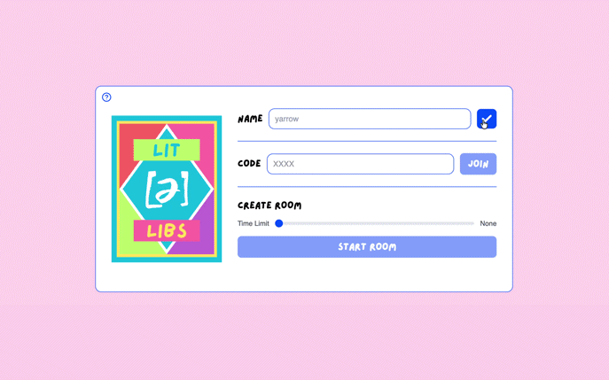
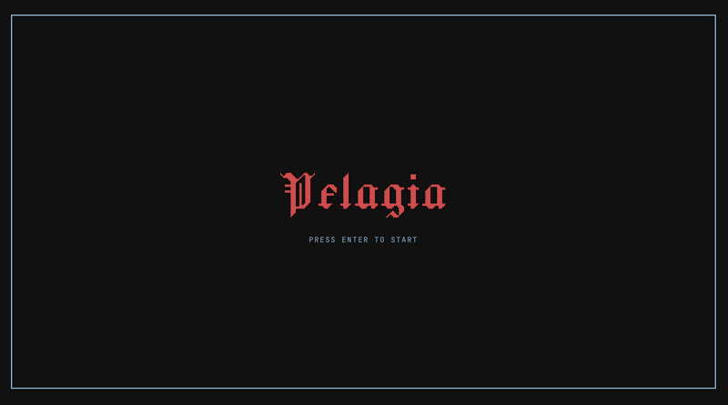
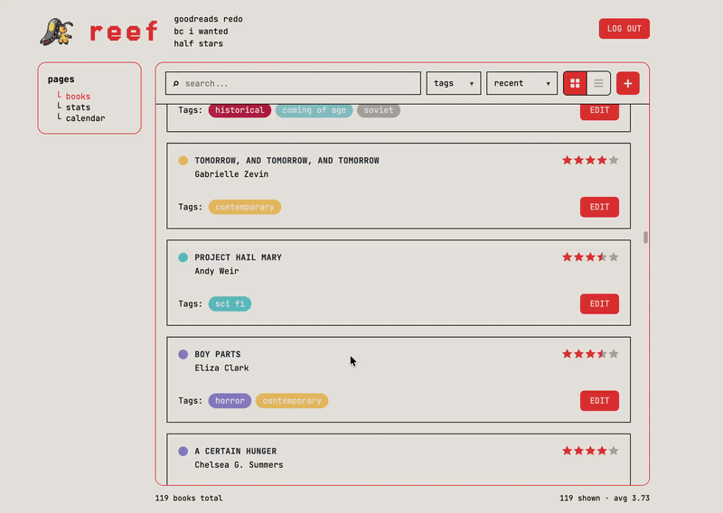
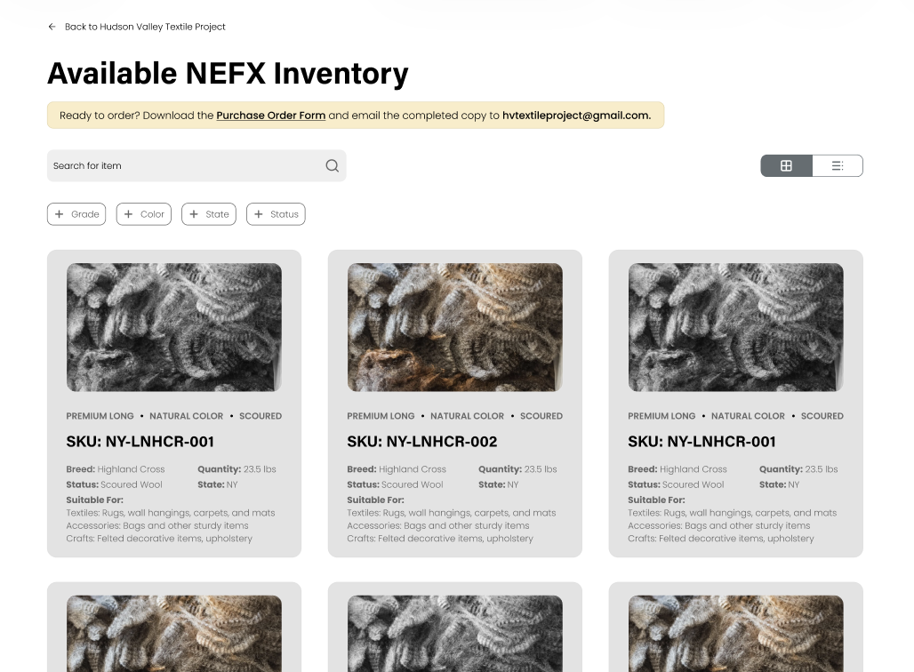
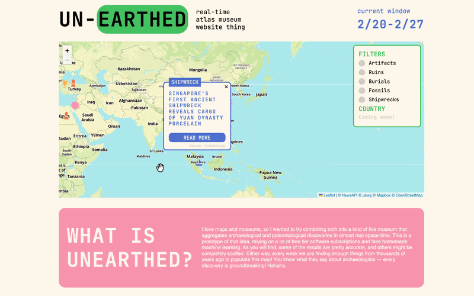
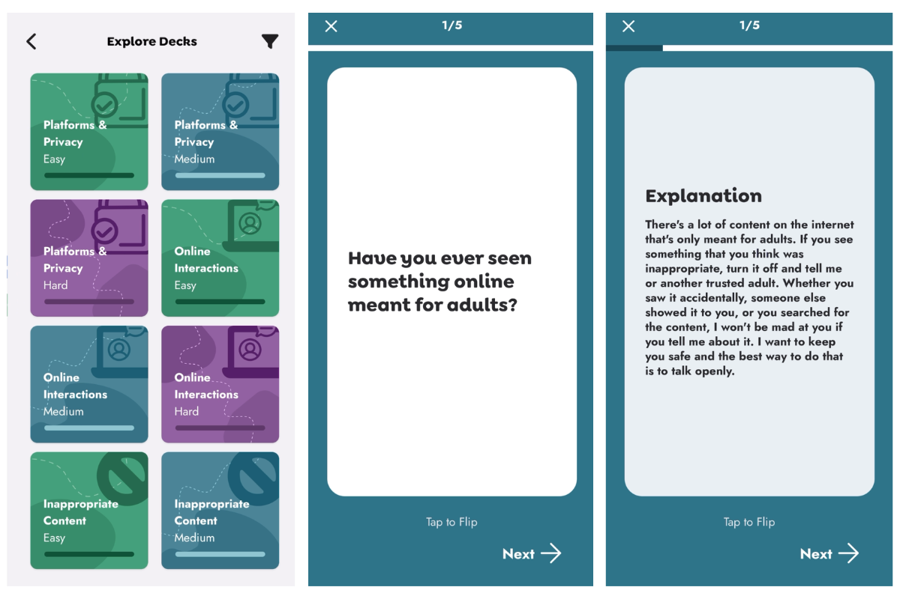

Projects

Lit Libs
- Architected a full-stack real-time multiplayer party game using React , TypeScript , Node.js , Express , and Socket.io , implementing synchronized multi-room state and server-authoritative game logic
- Built a custom card-deck engine and responsive UI with selection and trade mechanics, desktop stack and mobile carousel layouts, and animations

Pelagia
(WIP)
- Creating a browser-based roguelike dungeon crawler written entirely in vanilla HTML and JavaScript
- Implemented a turn-based combat system, inventory management with typed slots, character selection, and a state machine

Reef
- Built a Goodreads-style reading tracker with custom ratings, tagging, search, analytics, and calendar visualizations using React and TypeScript
- Implemented GitHub OAuth authentication and Gist-based persistence, enabling secure book management, interactive filtering, and dynamic visualizations of reading habits over time

Hudson Valley Textile Project
- Developing a full-stack inventory management system using TypeScript , React , and Firebase for a nonprofit supporting sustainable regional fiber supply chains
- Implemented REST API endpoints for creating, retrieving, and updating inventory records
- Built responsive UI workflows for lot creation, sales management, SKU generation, and item detail views with integrated form validation and user notifications

Unearthed
- Built a web app that fetches, filters, and maps recent archaeological and paleontological news articles using a Python serverless API deployed on Vercel
- Implemented an NLP pipeline with spaCy for article processing, integrated Mapbox geocoding for location disambiguation, and built a Leaflet map with category filters

Alaska Children's Trust
- Built a Quizlet-style mobile app in React Native focusing on child abuse prevention education
- Implemented a card-fetching API, digitized educational decks on child abuse, and designed intuitive navigation for enhanced user experience using TypeScript and Tailwind CSS

Caml Scrambl
- Built Scrabble from scratch in OCaml, including turn-based gameplay, word validation, scoring with multipliers, and robust error handling for edge cases and invalid inputs
- Designed an event-driven graphical interface via the OCaml Graphics library